# **第一部分 - 第二节** ## **<a href="https://www.bilibili.com/video/BV1nL4y147kH/">Brain Damage</a>** > The lunatic is on the grass<br> > Remembering games and daisy chains and laughs<br> > Got to keep the loonies on the path<br> > The lunatic is in the hall<br> > The lunatics are in my hall<br> > The paper holds their folded faces to the floor<br> > And every day the paper boy brings more<br> > And if the dam breaks open many years too soon<br> > And if there is no room upon the hill<br> > And if your head explodes with dark forbodings too<br> > I'll see you on the dark side of the moon<br> > The lunatic is in my head<br> > The lunatic is in my head<br> > You raise the blade, you make the change<br> > You re-arrange me 'till I'm sane<br> > You lock the door<br> > And throw away the key<br> > There's someone in my head but it's not me.<br> > And if the cloud bursts, thunder in your ear<br> > You shout and no one seems to hear<br> > And if the band you're in starts playing different tunes<br> > I'll see you on the dark side of the moon ## **24.10.7 ~ 10.12** <table> <tr> <td>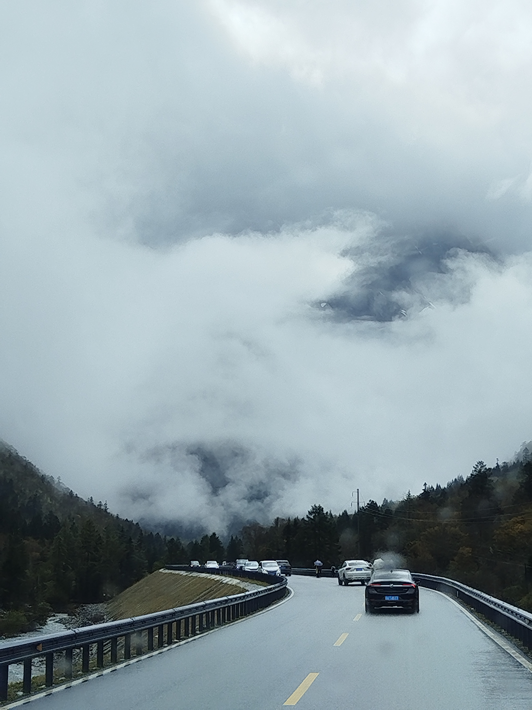</td> <td>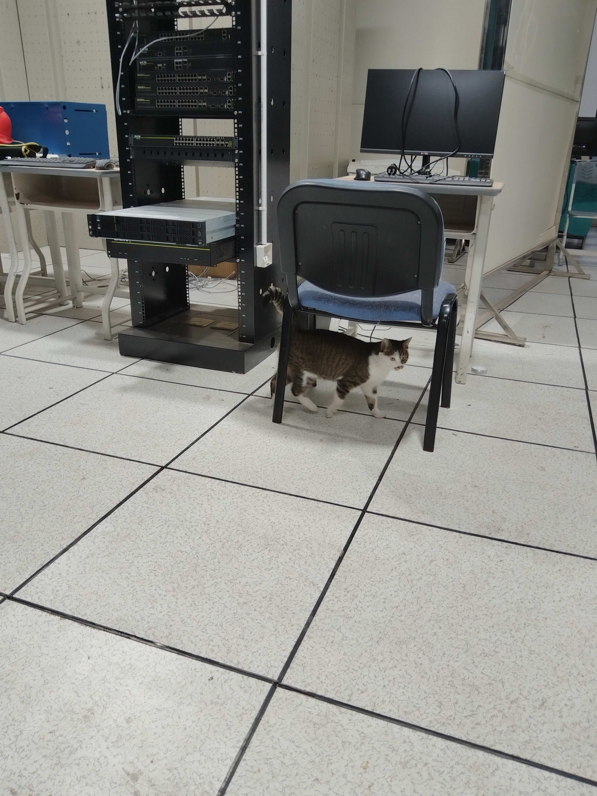</td> <td>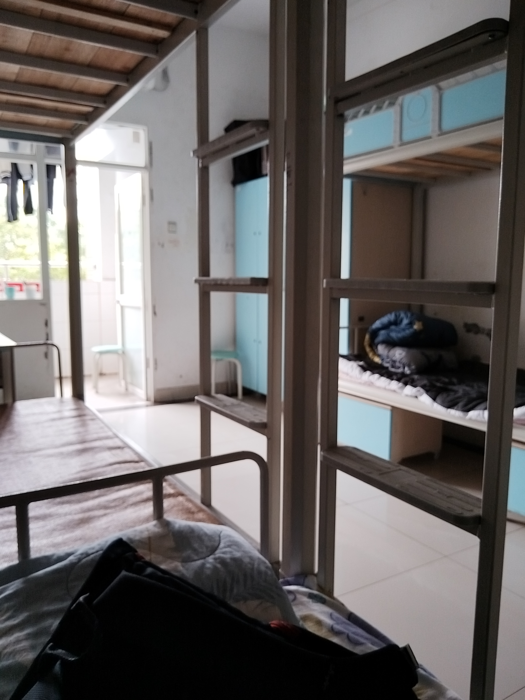</td> </tr> <tr> <td><strong>行驶在</strong><em>理小路</em><strong>上</strong></td> <td><strong>实训室里的猫</strong></td> <td><strong>10.12 中午的安静寝室</strong></td> </tr> <table> 现在是 10.7-17：25 我已经在学校了，此刻我的对面坐着 <strong><a href="../people.html">周易楠</a></strong> 他正在玩游戏，而这一切正好被我们未来的领导 <em><a href="../people.html">刘东霖</a></em> 看见了（大概吧），我这样写纯粹是因为他始终无所事事，此刻（17:33）他正看着抖音哈哈大笑，^_^ 完啦！就他这个混吃等死的样子，我怎么指望他跟我拿一等奖。“反正最后也是那个学校，拿不拿奖都无所谓”，这是他的原话。**:-)** 好啊，等培训开始你看我怎么收拾你，你不好好学我就天天鞭打你，是死是活都无所谓，反正你现在也只是一个工具，下课时间随便发两句牢骚、下午再吃一顿饭，这就是你的用处周易楠。 --- 来聊聊今年六月底（6.25）发生的事情吧，在寝室里发生的。寝室，是我们机械生活的一个节点，机器要用润滑油而生活也一样，平日的小打小闹、开开玩笑都是给这台机器上油，这是很重要的。而在我的世界中这一切还是出问题了，突如其来的故障。 现在是10.6-22:17，我正躲在被子里向我的平板输入你现在看到的文字，我是用自带的邮件写的然后保存到草稿箱中，之前每晚基本都是，我的双脚伸出被子外感受还不算冰冷刺骨的空气，同时耳机里还听着从b站缓存的月之暗面，这就是目前的状况。我的上铺就是故事的主人公，叫刘恭麟。在学期的最后一周的星期二晚上，我一如既往地从实训室回来，在九点半的时候我把我已经吃完方便面的碗洗干净后放入柜子，此时我还不知道要发生什么，此时寝室里面正在说着什么，似乎正在发牢骚，这是正常现象，他们平时会因为手机的分配问题而闹的大打出手背刺同班同学，这不足为奇，于是我就没有细听，转头去收拾我生产的垃圾，之前我听说是我做清洁于是就把垃圾桶给倒了，走到门口时才感觉到上方浓浓恶意，这时正开门就听到上方传来的谩骂声，我并不知道他的辱骂对象是我，我还是沉默着出门将垃圾倒入外面的桶中，刚到门口就听到里面的“鸟语花香”，我意识到不对劲，就谨慎地推门而入，果然在骂我，我就低调的收拾桌面避开他的视线，他骂了什么我没记住，反正没什么新奇的词语，我唯一记住的词语就是“哑巴”，因为我自始自终都没有说过一句话，只是听他讲笑话，虽然他骂的是我，只要内心强大任何人的对我的偏见就都是浮云，说真的，他骂了20分钟内容却一成不变，我甚至还想笑，不是什么sb 、死妈、臭傻逼就是夸张的在床上作动作来嘲讽我，呵，就这他要是阴阳我我还会给他个台阶下我再自讽一下，然后把他的诉求解决了，结果就这样，真没趣。后来他大概是嗓子疼了去喝水，然后寝室里有一位同学跟他说话，被他骂了一嘴，他说：“再鸡巴叫嘛，小心我也骂你哟” 这里就不再说了，有机会在线下再说吧。（懒得写了） --- 今天下午周易楠脑子一热去办公室问曾长春培训的事情。然后就乱套了。操，真是疯了。曾长春让周易楠来他的项目并询问他周末有没有时间，让他来培训还让他复习一下之前的资料，最后一句才让我震惊，“不是这个项目那你还想去哪个项目 ？”，啊？！！！在这里无法将我当时的状态描写出来，现在已经平静了，当前的计划很简单那就是明天去问刘冬霖。 像个死刑犯。今年二月开始，梦魇从两年前的时间线抓住了我，永无止境的梦持续到今天，挥之不去的阴影缠绕着我，从未停止。那个疯子在草地上拍完了他的遗照，他无能地看着美好的一切，日落余晖照耀着温暖的世界却无法进入他阴暗的未来，命运宣判他的结局，他开始怀疑，怀疑曾经的一切是否属于自己，他怀疑曾经的一切只不过是闯进了某人的幻想并认为那个人就是他自己，即使幻想曾真实存在且发生在他的身上，现在，他否决了，他似乎否决过去的一切。已经不能分清梦境与现实，寂静之声回荡在空无一人的世界，冬日将至，冰冷的空气使他在清醒的状态下做着自己逃避的噩梦，梦魇亲切地坐在他的旁边，对他莹莹细语，他最害怕的就是他的过去。 这一切不过是来自于一个失落世界的呢喃，在充满信心与希望的世界是不允许有这样的声音的，即使那里也是一片炼狱，身处这个世界的我也只能默默祝福你们。 *大专两年，实习一年，哈哈，专升本又四年；24岁，是......* 今天（10.10）下午周易楠在钉钉上去问曾长春他周末还来不来，曾长春说不，但是下周开始针对性培训。 我该如何述说这种感觉，将事情还原让我心累，更何况是令人感到毫无前途的答案。我该如何表达我所经历的一切，我们之间只是被一条河与一座山隔开，坚不可摧的心灵壁垒 --- 今天晚上（10.11）再一次把《鼠疫》看完了。 不知道你对眼前所阅读的文字作何感想，是嘲笑、沉思还是无感，都无所谓了。 我走在人群中，抬头便能望见远处的青山，但我必须看好脚下的下坡路，必须防止自己踩空以免在众人面前出洋相，尽管他们中的大部分人都不会在乎，他们冷漠他们也无事可做，如果我摔倒了想必那时会有三五个含蓄的女生在远处咯咯笑着。我相信在人群中有人会向我一样去看远处的青山。 天气变冷时，我得到第一场秋雨后的最好消息，我本想独自享受被认可的喜悦，但有更多人可以拥有它，我想了想还是给那个在日后相爱相杀的人说了。刚来到那片土地时，那里没有任何能够让我们坐下享受胜利喜悦的地方，于是，便从零搭建一个日后无法忘怀、平静的巢穴，而现在再一次提起那个地方，曾经的五人中有人哀伤有人逃避，还有三人正在挣扎。 ### 我与张行的邮件 > **主题：比赛与考试** > > **时间：2024年10月12日（星期六）上午9：57** > > **收件人：张行 王子轩** > > 我必须来，如果不来我就会失去这里的一切，这是毁灭性打击，你知道我的。 > 先不管曾长春是否允许，至少我可以拿<a href="../people.html">代强</a>开刀。早上他问我去不去曾那里，我说去，而楠那里我说的则是代让我去，黑白颠倒了，反正我的目的很简单。 > > 楠对我说他的计划，他打算第一天先不让我去让我等消息，如果曾问到我那就让我来，哈，不可能，我会先发制人将他的热情扑灭，而且就要成功了，就差临门一脚。我打算在培训开始的那天跟他说这件事情，如果在晚自习那就在上晚自习前。如此等等... > > 如果失败了，就只能蛰伏，等到寒假来临去走那条极端的道路。 > > 实习？我并不想去，每日做着相同的事情拿着可怜的薪水，整整一个学期，多可怜。苦难能够让人们思考，这也是为什么他们当中有人改头换面的原因，我已经认识到了，正避免这可怕的事情。 --- ### **<a href="https://www.bilibili.com/video/BV11u4y1q7rw/">Wish You Were Here</a>** 第二年，在逐渐回暖的日子里，最后一批寒流也紧随而至。五个人还是散了，如果他们能拿到一等奖那我们也可以一直呆在这里，不知结果出来时他们两人作何感想。 又是秋雨，又是那个阴暗的季节，仅仅是一年以前还充满希望，而现在又走上抉择之路。 --- <table> <tr> <td>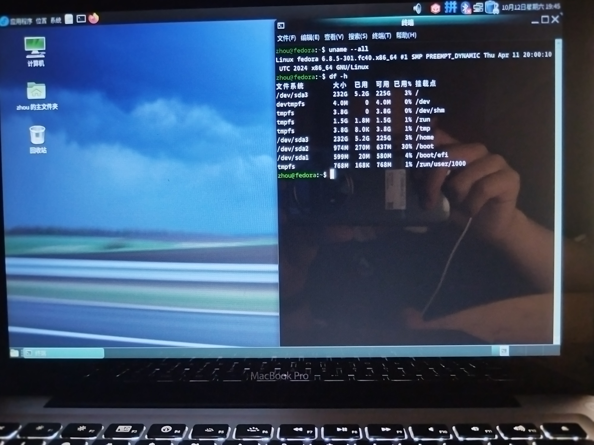</td> <td>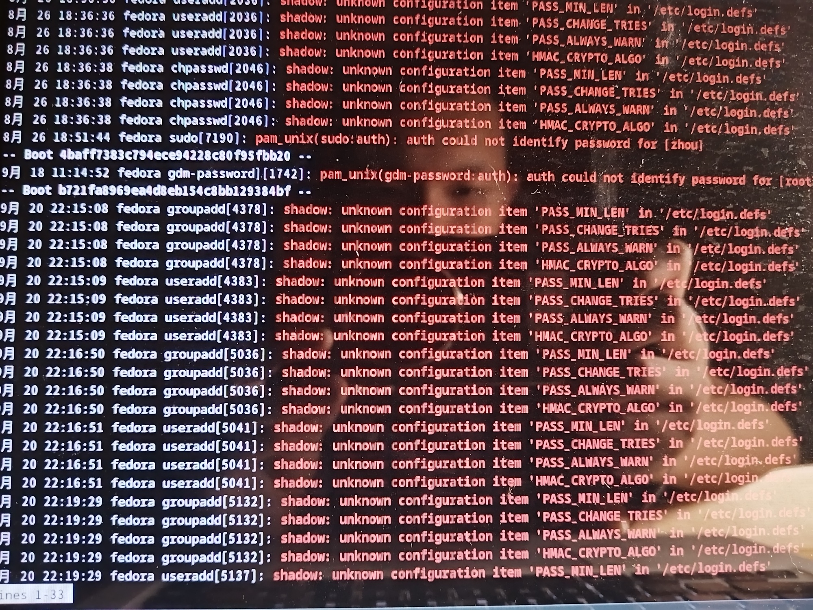</td> <td>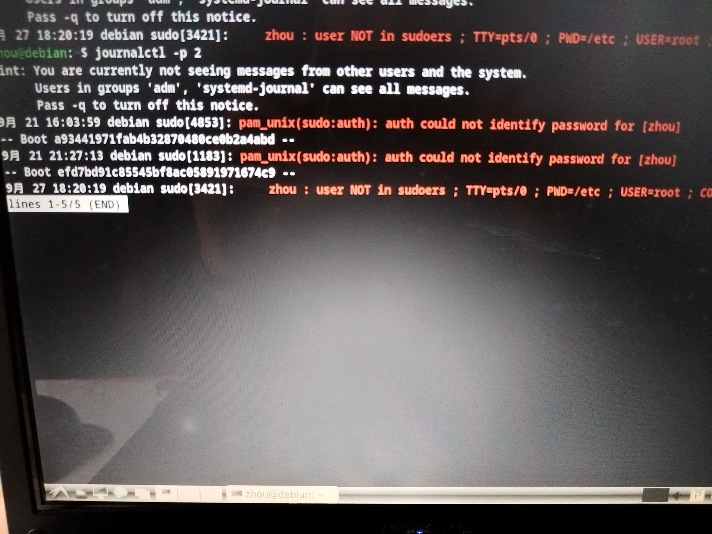</td> </tr> <tr> <td><strong>MacBook Pro上的Fedora</strong></td> <td><strong>MacBook Pro 执行命令：<a href="https://linux.cn/article-15544-1.html">journalctl</a> -p 2</strong></td> <td><strong>debian系统对比</strong></td> </tr> <tr style="background-color: lightgrey;"><td colspan="3"></td></tr> <tr> <td>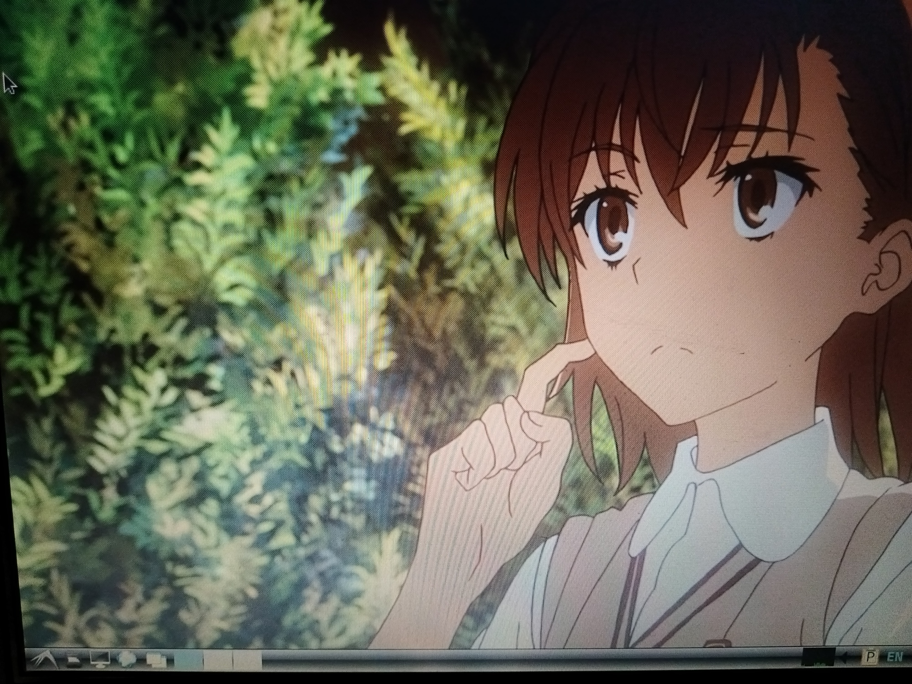</td> <td>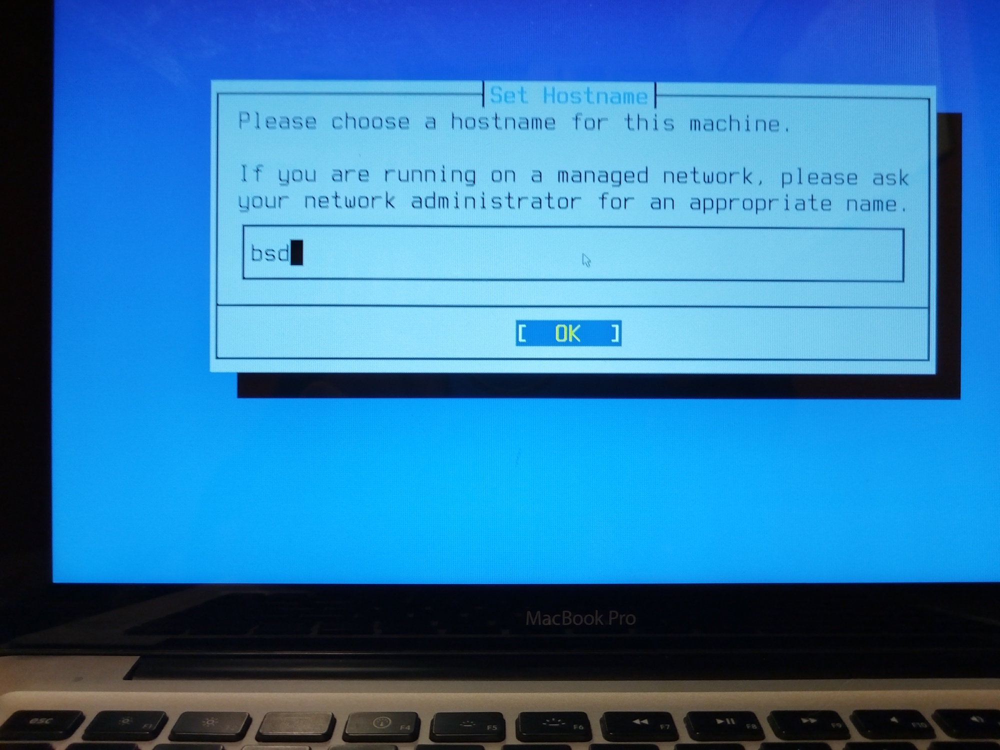</td> <td>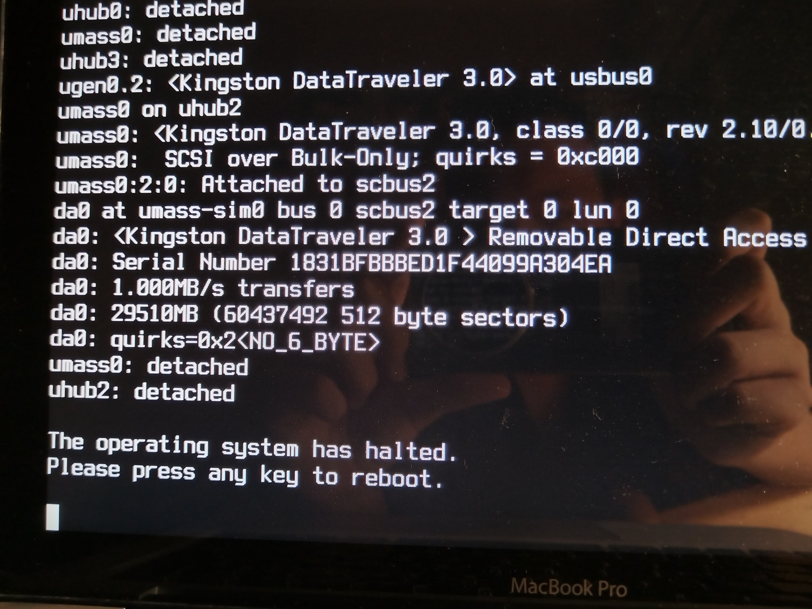</td> </tr> <tr> <td>再炫耀一下</td> <td>在苹果上安装*FreeBSD*，设置主机名中</td> <td>安装完成，在重启时卡住了（无语）</td> </tr> <tr style="background-color: lightgrey;"><td colspan="3"></td></tr> <tr> <td>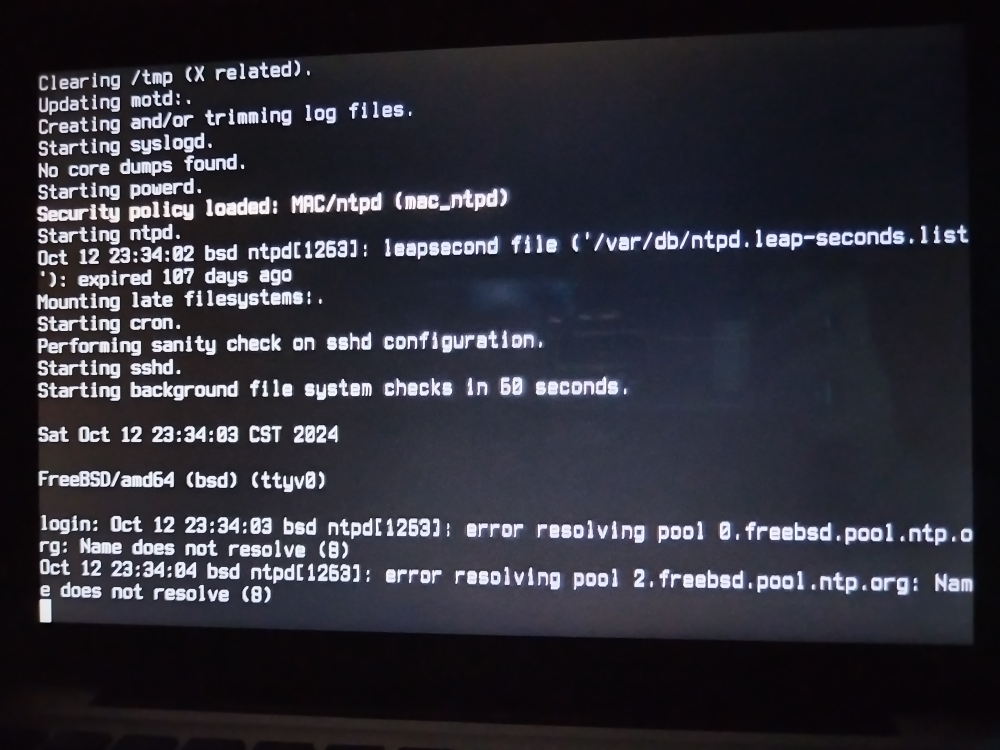</td> <td>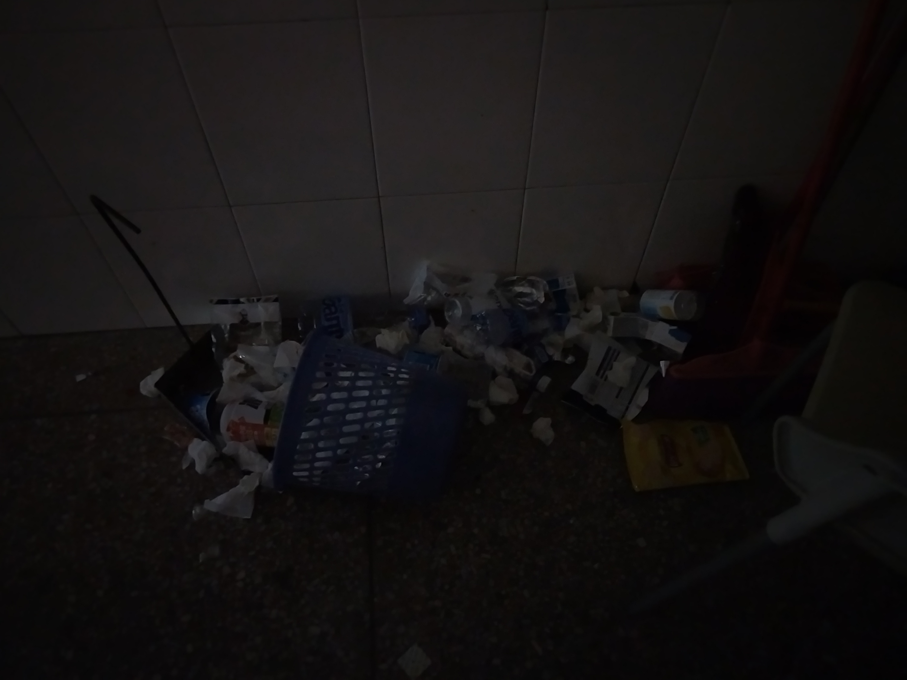</td> <td>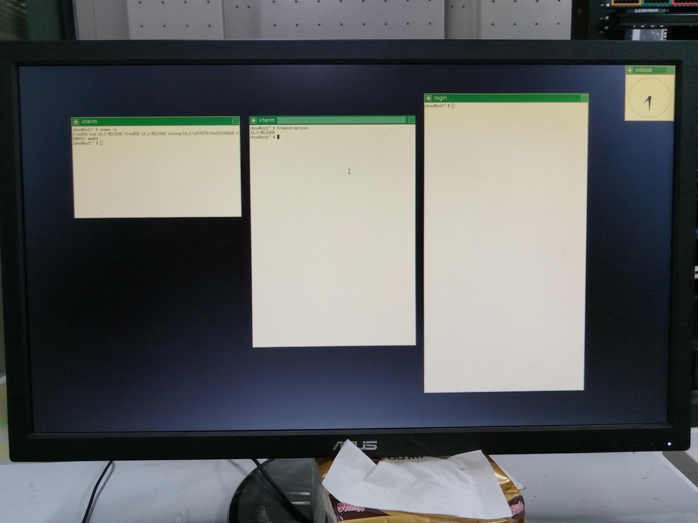</td> </tr> <tr> <td>安装成功后的 MacBook Pro (出现了一条 ntpd 错误消息)</td> <td>10.14 晚上八点一刻的教室（最右边是我的座位）</td> <td>FreeBSD 14 x window</td> </tr> <tr style="background-color: lightgrey;"><td colspan="3"></td></tr> <tr> <td>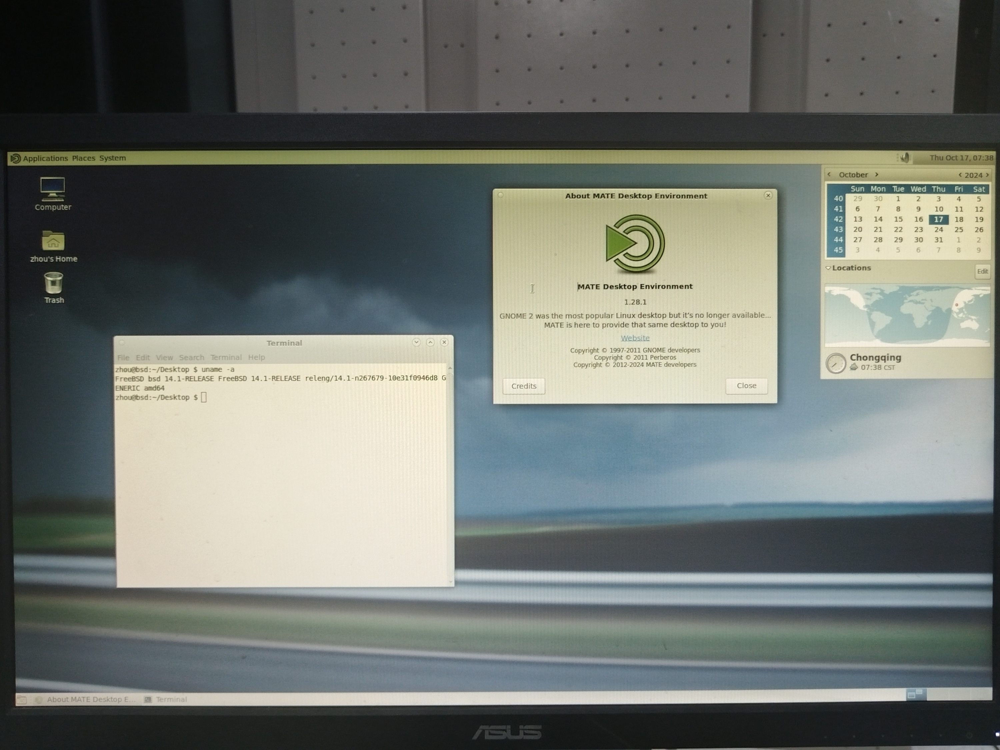</td> <td>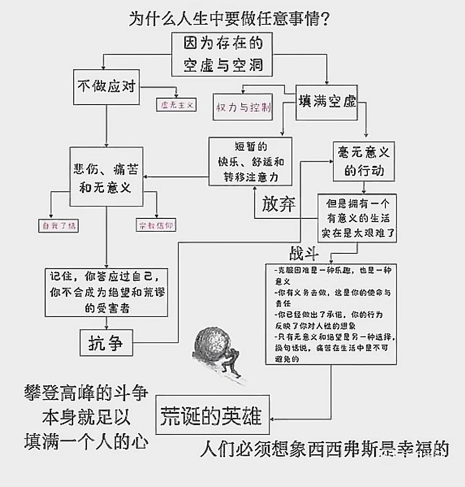</td> <td><img src="../../imgs/IMG_20241017_192026_resized_20241018_045030570.jpg"></td> </tr> <tr> <td>FreeBSD Mate desktop (无登录管理器)</td> <td>网图，来自 bilibili</td> <td>10.17 晚上</td> </tr> </table> <br> <div style="margin: 0px; padding: 0px; width: auto;"> <div style="float: left; text-align: center;"> <h4>←<a href="./1.html">第一节</a> </h4> </div> <div style="float: right; text-align: center;"> <h4><a href="./3.html">第三节</a> →</h4> </div> </div>